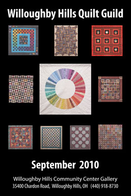
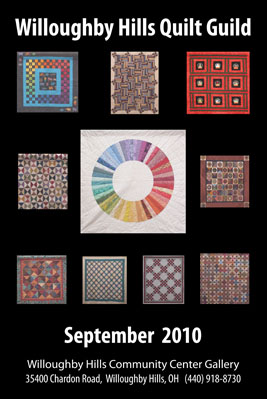

| Home | Past Exhibits | Posters For Sale | Contact | Application | Follow Us on |
|---|
Raffle and Donations |
||
Your help can make The Willoughby Hills Community Art Gallery “The Place Where Art Lives”.The purpose of this gallery is to educate and promote the arts and the artists. The art gallery was established with the help of the mayor and members of the city council of Willoughby Hills. By supplying us the initial funds for a hanging system and the bare walls of the atrium of the Willoughby Hills Community Center, the galley was established.
|
||
|---|---|---|
Quilt Raffle to raise funds to support the Willoughby Hills Community Center Gallery.
|
This beautiful quilt was made by the Willoughby Hills Quilt Guild and donated to help raise needed funds for the Willoughby Hills Community Center Gallery.The quilt measures 52” x 59”.The quilt was pieced and quilted by guild members. It is made of civil war fabric and was machine quilted, machine pieced and is 100% cotton fabric and padding.100% of every dollar raised by the sale of raffle tickets goes directly to funding the growth and promotion of the gallery and the arts. There are no administrative costs. The gallery is staffed by volunteer Gallery Directory and other volunteers. |
|
| Become a Philanthropist and Support The Willoughby Hills Community Center Gallery | ||
Tax deductible donation of $10An email receipt will be sent to you for your records. |
||
Tax deductible donation of $25An email receipt will be sent to you for your records. |
||
Tax deductible donation of $100An email receipt will be sent to you for your records. |
||
Tax deductible donation of $200An email receipt will be sent to you for your records. |
||
For every opening there is a raffle to raise funds to support the gallery. Tickets are $1 or 6 for $5.00 Now you can by your tickets on line in advance. We will send you the ticket # and fill out you ticket and enter it for you. The next Opening night raffle will b drawn November 9th. 2012 |
||
POSTERS OF ALL EXHIBITS$7 eachAll funds are used to support the gallery! |
||
|
|
||

 
